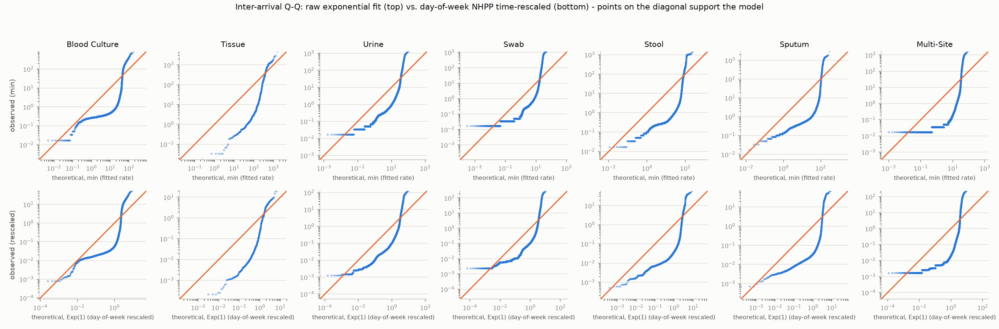

Real mean gap between booking-in events vs. the configured SampleTypeProfile mean (which models lab_sim/arrivals.py's true physical arrival process), and a K-S test against an exponential distribution fitted to the real gaps. A low K-S stat / high p-value supports the exponential (Poisson-arrival) assumption.
| Group | Gaps (n) | Real mean inter-arrival | Configured mean | K-S stat vs. exponential |
|---|---|---|---|---|
| Blood Culture | 5844 | 18.8 min | 14.3 min | 0.684 (p=0.000) |
| Tissue | 481 | 3.8 h | 3.3 h | 0.504 (p=0.000) |
| Urine | 9987 | 11.2 min | 43.0 min | 0.598 (p=0.000) |
| Swab | 22593 | 4.9 min | 18.7 min | 0.623 (p=0.000) |
| Stool | 3852 | 28.5 min | 111.4 min | 0.728 (p=0.000) |
| Sputum | 3253 | 33.7 min | 2.1 h | 0.757 (p=0.000) |
| Multi-Site | 12929 | 8.6 min | — | 0.766 (p=0.000) |
Best-fit distribution among normal/lognormal/gamma, selected by AIC, fitted to booking-in-to-verification time pooled across positive and negative results.
| Group | Completed (n) | Mean | Median | Best-fit distribution (AIC-selected) | K-S stat vs. best fit |
|---|---|---|---|---|---|
| Blood Culture | 7517 | 123.3 h | 120.2 h | lognormal (0.24, 1.93, 116.97) | 0.433 (p=0.000) |
| Tissue | 501 | 329.8 h | 192.8 h | gamma (0.81, 43.04, 351.1) | 0.123 (p=0.000) |
| Urine | 10239 | 64.7 h | 52.1 h | lognormal (1.07, 18.97, 28.91) | 0.132 (p=0.000) |
| Swab | 23347 | 55.3 h | 46.7 h | lognormal (0.59, -0.11, 45.92) | 0.139 (p=0.000) |
| Stool | 3930 | 72.3 h | 69.3 h | lognormal (0.33, -1.85, 69.7) | 0.111 (p=0.000) |
| Sputum | 3278 | 107.1 h | 64.2 h | lognormal (0.78, 26.39, 46.99) | 0.142 (p=0.000) |
| Multi-Site | 16021 | 29.2 h | 25.3 h | lognormal (0.97, 20.08, 5.53) | 0.031 (p=0.000) |
| Group | Positive (n) | Positive mean | Positive median | Negative (n) | Negative mean | Negative median |
|---|---|---|---|---|---|---|
| Blood Culture | 700 | 90.5 h | 79.1 h | 6817 | 126.7 h | 120.2 h |
| Tissue | 354 | 208.0 h | 171.1 h | 147 | 623.1 h | 550.8 h |
| Urine | 5097 | 93.9 h | 92.1 h | 5142 | 35.8 h | 31.3 h |
| Swab | 6828 | 85.7 h | 74.2 h | 16519 | 42.8 h | 29.5 h |
| Stool | 224 | 100.7 h | 91.8 h | 3706 | 70.6 h | 68.6 h |
| Sputum | 1470 | 109.8 h | 80.3 h | 1808 | 105.0 h | 56.7 h |
| Multi-Site | 191 | 80.7 h | 71.6 h | 15830 | 28.6 h | 25.2 h |
| Group | Rows (n) | Positive (n) | Real % positive | Configured % positive |
|---|---|---|---|---|
| Blood Culture | 7517 | 700 | 9.3% | 9.3% |
| Tissue | 501 | 354 | 70.7% | 70.7% |
| Urine | 10239 | 5097 | 49.8% | 49.8% |
| Swab | 23347 | 6828 | 29.2% | 29.2% |
| Stool | 3930 | 224 | 5.7% | 5.7% |
| Sputum | 3278 | 1470 | 44.8% | 44.8% |
| Multi-Site | 16021 | 191 | 1.2% | — |
Real organism text is matched to the model's Organism enum by substring (see analysis/organism_mapping.py); anything unmatched falls under Other.
| Group | Organism | Real count | Real % of positives | Configured % |
|---|---|---|---|---|
| Blood Culture | Other | 251 | 35.9% | 35.9% |
| Blood Culture | Escherichia Coli | 114 | 16.3% | 16.3% |
| Blood Culture | Staphylococcus Epidermidis | 110 | 15.7% | 15.7% |
| Blood Culture | Staphylococcus Aureus | 76 | 10.9% | 10.9% |
| Blood Culture | Klebsiella Pneumoniae | 37 | 5.3% | 5.3% |
| Blood Culture | Enterococcus Spp | 34 | 4.9% | 4.9% |
| Blood Culture | Pseudomonas Aeruginosa | 22 | 3.1% | 3.1% |
| Blood Culture | Candida Spp | 10 | 1.4% | 1.4% |
| Blood Culture | Enterobacter Hormaechei | 9 | 1.3% | 1.3% |
| Blood Culture | Klebsiella Oxytoca | 9 | 1.3% | 1.3% |
| Blood Culture | Streptococcus Dysgalactiae | 7 | 1.0% | 1.0% |
| Blood Culture | Proteus Spp | 7 | 1.0% | 1.0% |
| Blood Culture | Streptococcus Agalactiae | 6 | 0.9% | 0.9% |
| Blood Culture | Citrobacter Koseri | 5 | 0.7% | 0.7% |
| Blood Culture | Pseudomonas Spp | 3 | 0.4% | 0.4% |
| Tissue | Other | 101 | 28.5% | 28.5% |
| Tissue | Staphylococcus Aureus | 97 | 27.4% | 27.4% |
| Tissue | Escherichia Coli | 28 | 7.9% | 7.9% |
| Tissue | Pseudomonas Aeruginosa | 23 | 6.5% | 6.5% |
| Tissue | Staphylococcus Epidermidis | 21 | 5.9% | 5.9% |
| Tissue | Candida Spp | 20 | 5.6% | 5.7% |
| Tissue | Trichophyton Rubrum | 19 | 5.4% | 5.4% |
| Tissue | Enterobacter Hormaechei | 13 | 3.7% | 3.7% |
| Tissue | Proteus Spp | 7 | 2.0% | 2.0% |
| Tissue | Enterococcus Spp | 6 | 1.7% | 1.7% |
| Tissue | Mixed Skin Flora | 6 | 1.7% | 1.7% |
| Tissue | Mixed Gram Negative Flora | 5 | 1.4% | 1.4% |
| Tissue | Klebsiella Pneumoniae | 3 | 0.8% | 0.9% |
| Tissue | Citrobacter Koseri | 2 | 0.6% | 0.6% |
| Tissue | Streptococcus Agalactiae | 2 | 0.6% | 0.6% |
| Tissue | Streptococcus Dysgalactiae | 1 | 0.3% | 0.3% |
| Urine | Escherichia Coli | 2496 | 49.0% | 49.0% |
| Urine | Enterococcus Spp | 521 | 10.2% | 10.2% |
| Urine | Other | 476 | 9.3% | 9.3% |
| Urine | Klebsiella Pneumoniae | 371 | 7.3% | 7.3% |
| Urine | Proteus Spp | 229 | 4.5% | 4.5% |
| Urine | Heavy Mixed Growth | 204 | 4.0% | 4.0% |
| Urine | Candida Spp | 157 | 3.1% | 3.1% |
| Urine | Pseudomonas Spp | 150 | 2.9% | 2.9% |
| Urine | Citrobacter Koseri | 123 | 2.4% | 2.4% |
| Urine | Enterobacter Hormaechei | 87 | 1.7% | 1.7% |
| Urine | Staphylococcus Epidermidis | 70 | 1.4% | 1.4% |
| Urine | Pseudomonas Aeruginosa | 67 | 1.3% | 1.3% |
| Urine | Klebsiella Oxytoca | 67 | 1.3% | 1.3% |
| Urine | Staphylococcus Aureus | 46 | 0.9% | 0.9% |
| Urine | Streptococcus Agalactiae | 31 | 0.6% | 0.6% |
| Urine | Streptococcus Dysgalactiae | 2 | 0.0% | 0.0% |
| Swab | Candida Spp | 1671 | 24.5% | 24.5% |
| Swab | Staphylococcus Aureus | 1538 | 22.5% | 22.5% |
| Swab | Mixed Skin Flora | 1527 | 22.4% | 22.4% |
| Swab | Other | 439 | 6.4% | 6.4% |
| Swab | Mixed Gram Negative Flora | 377 | 5.5% | 5.5% |
| Swab | Streptococcus Agalactiae | 320 | 4.7% | 4.7% |
| Swab | Pseudomonas Aeruginosa | 304 | 4.5% | 4.5% |
| Swab | Escherichia Coli | 161 | 2.4% | 2.4% |
| Swab | Streptococcus Dysgalactiae | 116 | 1.7% | 1.7% |
| Swab | Enterococcus Spp | 83 | 1.2% | 1.2% |
| Swab | Klebsiella Pneumoniae | 76 | 1.1% | 1.1% |
| Swab | Enterobacter Hormaechei | 72 | 1.1% | 1.1% |
| Swab | Pseudomonas Spp | 38 | 0.6% | 0.6% |
| Swab | Proteus Spp | 32 | 0.5% | 0.5% |
| Swab | Klebsiella Oxytoca | 25 | 0.4% | 0.4% |
| Swab | Citrobacter Koseri | 22 | 0.3% | 0.3% |
| Swab | Staphylococcus Epidermidis | 17 | 0.2% | 0.3% |
| Swab | Haemophilus Influenzae | 9 | 0.1% | 0.1% |
| Swab | Heavy Mixed Growth | 1 | 0.0% | 0.0% |
| Stool | Other | 167 | 74.6% | 74.6% |
| Stool | Escherichia Coli | 57 | 25.4% | 25.4% |
| Sputum | Candida Spp | 448 | 30.5% | 30.5% |
| Sputum | Pseudomonas Aeruginosa | 298 | 20.3% | 20.3% |
| Sputum | Other | 269 | 18.3% | 18.3% |
| Sputum | Haemophilus Influenzae | 144 | 9.8% | 9.8% |
| Sputum | Staphylococcus Aureus | 87 | 5.9% | 5.9% |
| Sputum | Pseudomonas Spp | 48 | 3.3% | 3.3% |
| Sputum | Mixed Gram Negative Flora | 45 | 3.1% | 3.1% |
| Sputum | Escherichia Coli | 38 | 2.6% | 2.6% |
| Sputum | Klebsiella Pneumoniae | 30 | 2.0% | 2.0% |
| Sputum | Proteus Spp | 18 | 1.2% | 1.2% |
| Sputum | Enterobacter Hormaechei | 15 | 1.0% | 1.0% |
| Sputum | Citrobacter Koseri | 13 | 0.9% | 0.9% |
| Sputum | Klebsiella Oxytoca | 10 | 0.7% | 0.7% |
| Sputum | Streptococcus Agalactiae | 7 | 0.5% | 0.5% |
| Multi-Site | Staphylococcus Aureus | 191 | 100.0% | — |
The simulation's arrival process is constant-rate Poisson with no day-of-week variation; this table is descriptive only.
| Day received | Rows | % |
|---|---|---|
| Monday | 9591 | 14% |
| Tuesday | 10505 | 16% |
| Wednesday | 11516 | 17% |
| Thursday | 10160 | 15% |
| Friday | 9653 | 14% |
| Saturday | 8723 | 13% |
| Sunday | 7064 | 11% |
Present in the real data but not in SampleType and not analyzed above.
| Specimen type | Rows |
|---|---|
| Nail | 657 |
| Body Fluid | 380 |
| Breast milk | 352 |
| Broncho-alveolar Lavage | 268 |
| Environmental | 208 |
| Stem Cells | 184 |
| Drain - Tube - Other device | 137 |
| Fluid | 51 |
| Post mortem swab | 42 |
| Cerebrospinal Fluid | 25 |
| Synovial Fluid | 22 |
| Hair | 22 |
| Dialysis fluid | 15 |
| Transport solution | 8 |
| Other | 3 |
| Vitreous humor | 2 |
| Aspirate | 1 |
| Tissue - Post mortem | 1 |
| Tissue - Biopsy | 1 |
The day-of-week table above shows arrival rate varies significantly by weekday for every group. Two candidate fixes were evaluated against that finding: modeling arrivals as a non-homogeneous Poisson process (NHPP) with a piecewise-constant, day-of-week rate, and fitting a Weibull distribution to inter-arrival gaps instead of an exponential.
The NHPP was tested properly, not just asserted: each row's day-of-week rate (arrivals/day, using an exact denominator - the number of distinct calendar days actually labeled with that weekday in the window, not occurrences×24h, since an ~78-day window contains each weekday 11 or 12 times unevenly) defines a piecewise-constant rate function, and the time-rescaling theorem converts each real inter-arrival gap into a rescaled interval that should be i.i.d. Exp(1) if the day-of-week model is right. Unlike the raw exponential K-S stat (which fits its rate from the same data), this rescaled K-S test has no fitted parameter, so it is a genuine test.
The result: day-of-week correction barely moves the needle. Rescaled K-S stats are only marginally lower than the raw ones, and - the single most informative number here - a Weibull shape fit to the rescaled gaps stays essentially unchanged from the raw shape (both cluster around 0.4-0.5 across every group) instead of collapsing toward 1. If day-of-week rate variation were the whole story, that shape would have moved to 1 after rescaling. It didn't, for any group. The Q-Q plots below show the same thing visually: the rescaled panel (bottom row) has essentially the same S-shaped deviation from the diagonal as the raw panel (top row).
That means most of the overdispersion - confirmed independently by the index-of-dispersion
table below, 5-50× a homogeneous Poisson process at every group - is happening at a
finer time grain than day-of-week. There's now a much better-grounded explanation than
speculating about business hours: anon_received is when a sample is
booked in at reception, not when it physically arrives at the lab (see
TODO.md), so every gap fitted above is really an inter-booking-in gap. Booking-in is a
staff-paced LIS-logging step, not the external process generating physical specimens - of
course it doesn't look like a clean Poisson process; it looks like reception throughput.
That alone plausibly accounts for most of the residual burstiness the day-of-week
correction couldn't reach. Genuine hour-of-day arrival structure still can't be checked
from this export either way, since anon_received's fractional-day component
isn't anchored to true midnight. A hyperexponential/mixture-of-exponentials model was also
considered, but it's mathematically a discrete-rate mixture without tracking when
each rate applies, so it shares the day-of-week NHPP's blind spot to intra-day structure -
the day-of-week rates already computed make a separate fit redundant for this review.
Recommendation: still worth encoding day-of-week rate variation in the
simulation - it's real, statistically confirmed, and cheap to implement as a 7-bucket rate
multiplier - but don't expect it alone to fix the exponential K-S rejection, since the gaps
it's being tested against are booking-in gaps, not lab_sim/arrivals.py's
modeled physical-arrival process. Plain Weibull fit to the pooled (non-rescaled) gaps
captures far more of the shape (see the AIC improvement column below) than the day-of-week
NHPP does, so a pragmatic interim arrival model - if/when this feeds a
lab_sim/arrivals.py change - is day-of-week rate buckets with a Weibull, not
exponential, gap distribution within each bucket. The bigger levers are getting a
booking-in-to-verification split that isolates true physical arrival time, and fixing the
timestamp anchoring so hour-of-day structure can be modeled directly - both should be the
priority over further distributional tweaks once a corrected extraction is available.
| Group | Mon | Tue | Wed | Thu | Fri | Sat | Sun |
|---|---|---|---|---|---|---|---|
| Blood Culture | 96.8 | 110.2 | 113.4 | 106.7 | 128.2 | 81.4 | 67.7 |
| Tissue | 9.2 | 10.7 | 9.0 | 6.8 | 6.7 | 5.7 | 2.7 |
| Urine | 122.9 | 127.3 | 109.0 | 195.8 | 151.6 | 124.8 | 107.1 |
| Swab | 303.2 | 293.6 | 480.9 | 264.2 | 358.3 | 251.1 | 199.7 |
| Stool | 38.1 | 50.7 | 63.1 | 43.4 | 65.7 | 63.8 | 37.3 |
| Sputum | 37.7 | 61.0 | 58.0 | 37.5 | 49.5 | 54.9 | 20.1 |
| Multi-Site | 223.0 | 214.4 | 267.7 | 245.0 | 143.8 | 216.1 | 144.7 |
| Group | Raw K-S vs. exponential (fitted rate) | Rescaled K-S vs. Exp(1) (no fitted params) | Ties dropped |
|---|---|---|---|
| Blood Culture | 0.684 | 0.654 | 1672 |
| Tissue | 0.504 | 0.486 | 19 |
| Urine | 0.598 | 0.589 | 251 |
| Swab | 0.623 | 0.610 | 753 |
| Stool | 0.728 | 0.715 | 77 |
| Sputum | 0.757 | 0.740 | 24 |
| Multi-Site | 0.766 | 0.746 | 3091 |
Shape < 1 on the raw gaps is expected under day-varying Poisson rates (a mixture of exponentials is itself over-dispersed) and isn't evidence of genuine renewal-process structure on its own - the rescaled column is the one that tests whether day-of-week explains it away.
| Group | Raw Weibull shape | Raw AIC improvement over exponential | Rescaled Weibull shape | Rescaled AIC improvement over Exp(1) |
|---|---|---|---|---|
| Blood Culture | 0.41 | 17,361 | 0.41 | 17,979 |
| Tissue | 0.38 | 1,211 | 0.38 | 1,159 |
| Urine | 0.46 | 27,728 | 0.46 | 27,690 |
| Swab | 0.47 | 65,593 | 0.47 | 65,207 |
| Stool | 0.39 | 14,938 | 0.39 | 14,823 |
| Sputum | 0.40 | 13,468 | 0.40 | 13,283 |
| Multi-Site | 0.38 | 71,697 | 0.37 | 72,209 |
| Group | Index of dispersion (daily counts) |
|---|---|
| Blood Culture | 12.7 |
| Tissue | 5.1 |
| Urine | 31.0 |
| Swab | 50.7 |
| Stool | 13.6 |
| Sputum | 25.5 |
| Multi-Site | 41.8 |
